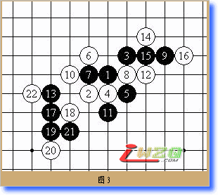
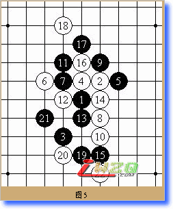

这是第三次参加全国赛了。９月初才决定参赛，但花了十天时间在我的软件改进上，以期望能对局面分析有所突破，可是收效不大。接下来的准备主要是做死活题和看实战谱，但时间已经不够了，准备的可以说很仓促。最后我没有携带任何与五子棋有关的东西（除了我的手机）出发了。
今年10月的天津很冷，两年前我就穿着短袖在同一个地方奋战到比赛结束，这次我却靠我惟一的一件长袖衬衣抵御着寒冷。。。这次去的很放松，在报到完毕后我和四位上海棋手去了传说中的小吃街，1990年遍布炒货、烧烤的街面上却堆满了手工艺品，只有两旁的店面还在提示这里是小吃街。。。回顾了一下狗不理包子的味道，我们回到了青年宫继续休息。
10月３日上午第一轮开始了。不知道为什么。我居然代替因故不能参赛的薛文曦坐在了4号种子的位子上。对手是山东的齐晓东，他执黑斜月布局，我交换了。为了避免进入对方的研究，我选择了实战的7、8是必然的手段，9准备展开攻击（见图1）。
实战对手的10很顽强，他没有选择在局部和我厮杀，而是做了两个活二来牵制我。这时我无非继续进攻了，只能进行了交换（见图2）。
这时白棋已经有先手了，但他没有选择进攻，局势按照我的设想发展（见图3），先手又回到了我手里，这时我已经不能再给他机会了。

经过几分钟的计算，我下出了23、25，局部已经崩溃了。白棋又象征性的抵抗了几下就认输了（见图4）。也算冒充了一下种子吧，呵呵。
第二轮我执黑开局对北京的谢磊，我开了名月，他交换了。我希望进入如下局面（见参考图1），没有想到他黑9提前变招了。
可能是轻敌吧，我选择了轻率的白10。黑11出现在棋盘上的时候我感觉大势已去。。。但就这样认输还是心有不甘的。我开始做最后的挣扎。说实话变换到22我还是满意的，同时对21有些迷惑（见图5），但可能是优势太大，我最终还是输了（见图6）。

接下来我又先后疏星交换后执黑输给了易海利和邹卫华，都是攻击崩溃的棋就不在这里摆了。接着我对杨柳，据说是一位网络新秀吧。20手用了我30分钟，我穷尽了9-16-20一线全部的全部防守点，这时他下出了惟一防（见图1）这对我的打击很大，提和未果后我胡乱下了几手草草结束了比赛。
我的第六个对手是管东建，又是疏星，我第一次老实的拿起了白棋。对手下了第九手居然一去不回，15分钟后我对裁判提出抗议，得到的回答居然是去吃早饭了？！最后我几乎是愤怒的抓了对手一个三三（见图2）。
第七轮对手是秦皇岛的小朋友安思远，我执黑开局他居然没有交换，然后速败。可爱的小孩子。
第八轮，可能是命运吧，我当时下完这个７的时候还在想必胜（见图3）。后来发现我把棋型混淆了，而且我以前从未下过这个５，这两个变换黑白棋型完全一致，组合起来就差了一斜格。。。（见参考图1）如果不是梅凡投子在前，我下完７就应该去争取那记录了。。。
最后一轮无心恋战，也不在这里摆了^&^
总的来说输的很惨，虽然这和坐错位子有关系；不过实力还是有差距。五子棋计算的奥义还需要不断探索。
（作者系上海五子棋委员会会员、二段棋手、连珠城市网开发者）